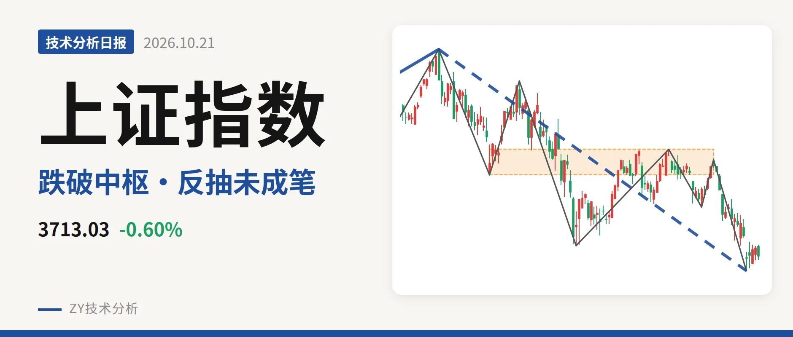
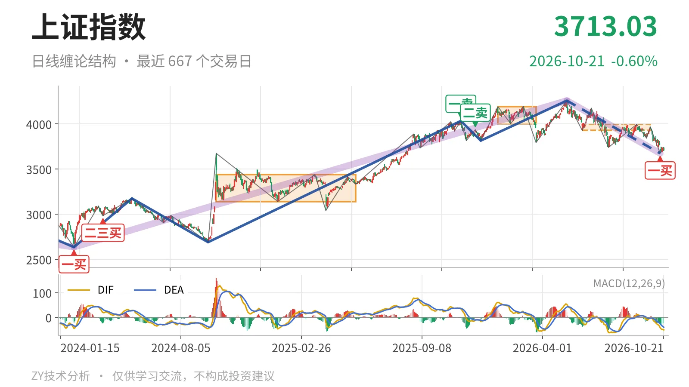
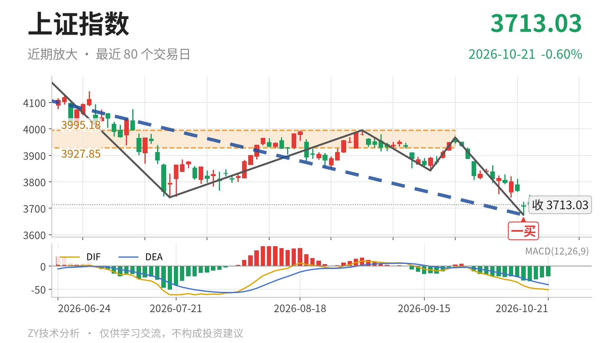

上证指数｜新低不新弱，反抽看3928点

最近日线中枢 3927.85—3995.18点，收盘位于中枢之下
一句话：新低不新弱，一买后反抽未成笔，先看3928点附近。
📉 走势结构：更大级别上涨未坏，日线下跌段还在延续
日线级别当前处于下跌线段中，更大级别上涨还没有被反向线段破坏。2024年2月5日至2026年5月14日的更大级别上涨段从2635.09点升至4258.86点，上涨约61.6%，尚未结束；随后5月14日至10月15日的日线下跌线段从4258.86点落到3674.82点，跌约13.7%，还在延续，内含7笔。最新收盘3713.03点贴近该下跌线段下沿，说明日线回落未出现反向线段。

🧭 中枢与位置：跌破最近中枢，反抽先看3928点
最新价在最近日线笔中枢下方。该中枢为6月8日至9月22日的3927.85—3995.18点，中轴3961.51点，尚未完成；最新收盘3713.03点低于下沿约5.5%。相较1月14日至3月23日的4002.78—4190.87点中枢，最近中枢明显下移。价格跌穿下沿后，反抽若不能回到3928点附近，就不是回到中枢内部。
📍 买卖点：10月15日一买已现，后续未成笔
日线笔级别上，10月15日3674.82点是一买。该点落在9月22日至10月15日下跌笔末端，此笔已经结束；10月16日至10月21日只有4根K线，最高3750.77点、最低3681.28点，没有形成反向笔，一买低点未被跌破。2025年11月14日一卖4034.08点、2025年12月8日二卖3936.31点，都因2026年5月14日创出4258.86点新高，只对应更小级别。当前日线笔结构的关键低点只有这个一买低点。

⚡ 背驰：新低不新弱，绿柱面积收窄
最关键的背驰出现在6月23日至7月20日与9月22日至10月15日两段下跌笔之间。前者从4175.35点跌至3741.11点，绿柱面积289，DIF低点-61.8；后者从3967.68点跌至3674.82点，价格创出新低，但绿柱面积只有192，DIF低点-42.2。新低但绿柱面积缩小、DIF低点抬高，属于新低不新弱。这是10月15日一买的结构来源。当前DIF为-51.2、DEA为-40.1、柱体-22.1，DIF仍在零轴之下，说明日线动能仍偏空，背驰还没扩散到线段级别。
🧩 关键位置观察：反抽不回3928点则仍是三卖结构
后续只看两个结构位。反抽若回不到3928点附近，对6月8日至9月22日中枢而言就是回抽不进中枢，结构上有构成三卖的倾向，日线下跌线段仍有下探需求。若重新站上3995点，即回到该中枢上沿上方，这轮下跌更可能只是中枢扩展。若再跌破3674点，10月15日一买被破坏，背驰需重新比较。在站上3928点之前，当前日线结构按中枢下方反抽对待，暂属中性偏弱。
⚠️ 本文为基于公开行情数据的缠论技术结构记录，由程序自动计算并生成，仅供学习交流，不构成任何投资建议。市场有风险，投资需谨慎。